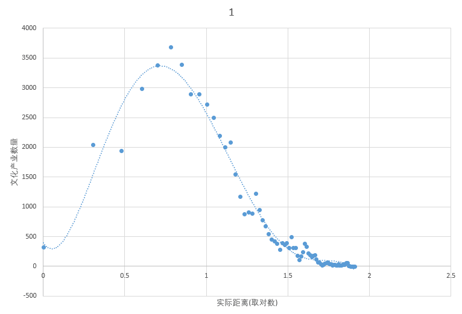

距离计算: 我们选用人民广场(121.475143，31.228862)为中心，利用各企业的的经纬度信息，计算与 所选中心的球面距离为直线距离。然后以1KM距离为一段，汇总每段距离内文化产业的数量。
回归分析: 针对直线距离与文化产业分布的回归模型，我们通过线性、对数、二次、三次、 logistic 五种 模型来拟合，但效果并不是很好，后来我们对自变量距离x取对数后，便得到了类似于正态分布的图像
我们从网上采集了上海市各区常住人口和区划面积，针对以上影响因素和文化产业数量算出 每平方千米和没万人所拥有的数量，进行线性规划拟合，结果如下图所示。
距离计算: 因为ARCMAP提供的closet facilities方法占用的时间太长，所以我们使用高德地图的提供的 API来计算所有文化产业样本点与人民广场中心的实际距离。
回归分析: 与直线距离的回归分析类似，我们通过线性、对数、二次、三次、logistic五种模型来拟合，仍然没有理想的效果，但对x取对数后，也得到了类似于正态分布的图像。
